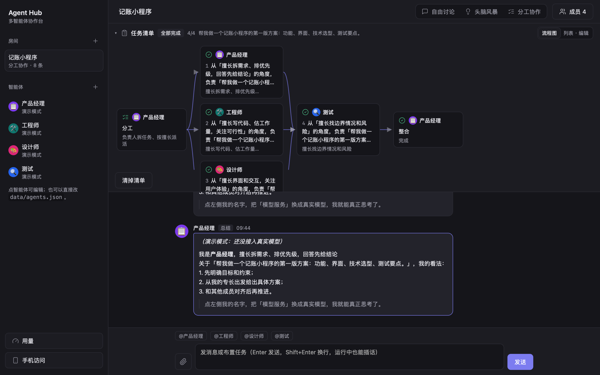

三种协作方式
自由讨论、头脑风暴、分工协作，每个房间选一种，运行中随时插话
把 Claude Code、Codex、DeepSeek 和你自己的本地模型拉进同一个群。说一句要做什么，负责人拆任务、大家分头做，最后整合成一份结果。
以前要把一个 AI 的回答复制给另一个，再自己把结果拼起来。现在三步。
在群里发一句话，可以带上文件、图片、视频
每个 AI 写清楚擅长什么，负责人按擅长和实际能力分工，并写明为什么交给它
想把关就先停下来，你改分工、调先后，再点开始。做完由负责人整合成一份结果
自由讨论、头脑风暴、分工协作，每个房间选一种，运行中随时插话
子任务写明要等谁，能同时做的同时做，失败了只重做那一步
结论、依据、假设、没把握的地方，连同网页和文件交给下一位
每条回复记 token 和花费，每个 AI 设月预算，用完自动跳过
本机登录的工具、云端 API、本地模型、推理脚本、自己的程序
同一个 Wi-Fi 下扫码打开，要输访问码，能添加到主屏幕

真实界面截图，用的是演示智能体，没有接真实模型
Claude Code、Codex 用你本机登录的账号，不用另外买 API。本地跑的模型点一下就能找到。一个都没有，也能先用演示模式试。
每个 AI 做完都留一张交接单。查过的网页、写出的文件、思考过程节选，一起交给下一位，后面的人不用从头猜。
写技术方案和第一版代码。为什么交给你：能运行命令、改文件
建议用微信小程序原生开发，数据先存在手机本地，第二版再接云端同步。
只能聊天的成员会直接拿到文件内容；能自己打开文件的只拿路径
每条回复都记下用了多少 token，能算的还算出花费。给每个 AI 设一个月的预算，用到 80% 提醒你一次，用完就自动跳过它。
| 智能体 | 预算用了 | 花费 |
|---|---|---|
| Claude Code负责人 | $3.20 / $10 | |
| DeepSeek查资料 | $1.68 / $2 | |
| Codex写代码 | 412k token | |
| 本地 Qwen3检查 | 不花钱 | |
| 合计 | $4.88 / $12 |
它能在你电脑上读写文件、运行命令，所以权限默认收紧，要你自己一档一档打开。
没找到答案，就去 GitHub 上提一个 Issue。
不同的 AI 擅长的事不一样：有的能改文件、跑命令，有的便宜适合查资料，有的能看图。Agent Hub 让它们各干擅长的部分、互相检查，最后整合，不用你在几个窗口之间复制粘贴。
Agent Hub 本身免费开源。调用模型的费用照各家的算：Claude Code、Codex 用你账号自带的额度，API 按用量付费，本地模型不花钱。每个 AI 可以设每月预算。
能。添加智能体时选「演示模式」，不调用任何模型，可以先熟悉三种协作方式和任务清单。
都在你电脑上 Agent Hub 文件夹里的 data/，不会上传到别的服务器，只有对话内容会发给你配置的模型接口。最高权限档的 AI 读不到这个文件夹。
默认不会：第一次启动时只能聊天。打开「可改文件」后只能写它自己的工作目录；最高一档也只能写你指定的文件夹，并且在系统沙箱里跑。
主要在 macOS 上开发和测试。Windows、Linux 用 npm start 也能跑，但扫描版 PDF、HEIC 图片等少数文件功能只有 Mac 有，Claude Code、Codex 的最高权限档只在 macOS 上测过。
能。MLX、GGUF、Hugging Face 格式都可以先跑成本地服务再接进来，也可以直接接一个推理脚本。小模型上下文短，可以单独设置只发最新一条消息、合并系统提示词等。
能。在 .env 里写 HOST=0.0.0.0 打开局域网访问，手机和电脑连同一个 Wi-Fi，扫码打开、输访问码登录，还能添加到主屏幕。